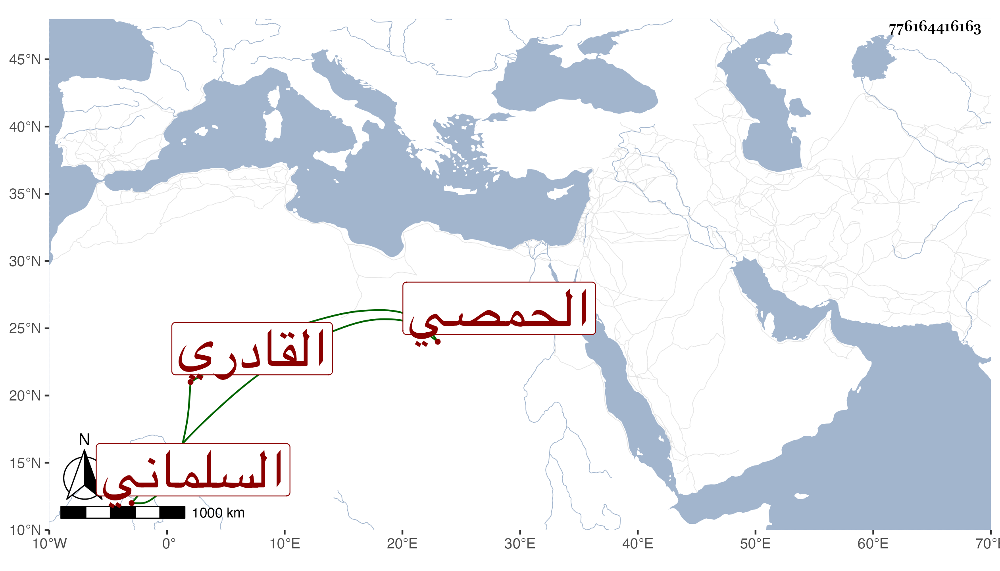

0902Sakhawi.DawLamic.ITO20230111-ara1.EIS1600.776164416163
Biography ID: 776164416163
479
محمد بن محمد بن محمد بن أحمد بن علي بن مكتوم الشمس السلماني الأصل الحمصي القادري . ولد في شوال سنة ثمان وخمسين وسبعمائة وسمع على الكمال أبي الغيث محمد بن عبد الله بن محمد الصائغ وعمر بن علي بن عمر البقاعي وإسماعيل بن معالي القصاب والشمس محمد بن علي بن أبي الكرم الموقع وأحمد بن داود بن محمد بن السابق والجمال يوسف بن أحمد بن الشمس السلماني الخياط والفخر عثمان بن عبد الله بن النعمان القصاب وسويد بن محمد بن سويد الرزاز بعض البخاري كما حددته في المعجم وحدث سمع منه الفضلاء . مات ولم يحرر له تاريخ بوفاته .
